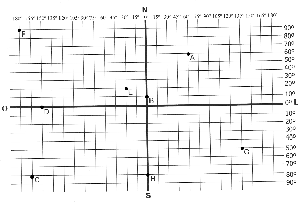
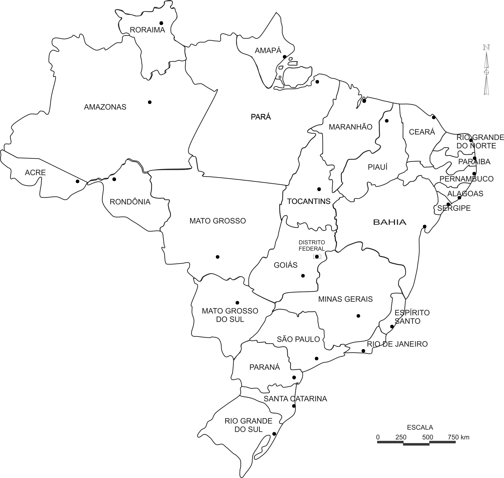

1) Imagine que você esteja no centro da Rosa dos Ventos abaixo. À sua frente o norte, à esquerda o oeste, à direita o leste e atrás o sul. Entre o norte e o leste o nordeste, e assim por diante... Observe objetos e pessoas que estão ao seu redor e de acordo com a localização responda:
| a) O que está à norte: | |
| b) O que está à sul: | |
| c) O que está à leste: | |
| d) O que está à oeste: | |
| e) O que está à nordeste: | |
| f) O que está à noroeste: | |
| g) O que está à sudeste: | |
| h) O que está à sudoeste: |
2) Escreva no mapa abaixo a exata localização dos pontos cardeais: Norte, Sul, Leste e Oeste.
3) Cada ponto equivale a uma coordenada geografica, ou seja, o cruzamento entre um linha de latitude e outra de longitude, que indica um ponto único de localização no planeta Terra.
Dê as coordenadas geográficas dos seguintes pontos, lembrando que a latitude é norte ou sul e a longitude é leste ou oeste:

Dê as coordenadas geográficas dos seguintes pontos, lembrando que a latitude é norte ou sul e a longitude é leste ou oeste:
PONTO A: latitude e longitude
PONTO B: latitude e longitude
PONTO C: latitude e longitude
PONTO D: latitude e longitude
PONTO E: latitude e longitude
PONTO F: latitude e longitude
PONTO G: latitude e longitude
PONTO H: latitude e longitude
PONTO B: latitude e longitude
PONTO C: latitude e longitude
PONTO D: latitude e longitude
PONTO E: latitude e longitude
PONTO F: latitude e longitude
PONTO G: latitude e longitude
PONTO H: latitude e longitude
4) Observe a escala do mapa abaixo e calcule as distâncias em quilômetros entre as capitais dos seguintes estados brasileiros:

a) São Paulo e Bahia:
b) Mato Grosso do Sul e Roraima:
c) Espírito Santo e Tocantins:
d) Ceará e Pernambuco:
e) Paraná e Goiás:
f) Minas Gerais e Rio de Janeiro:
b) Mato Grosso do Sul e Roraima:
c) Espírito Santo e Tocantins:
d) Ceará e Pernambuco:
e) Paraná e Goiás:
f) Minas Gerais e Rio de Janeiro:
5) O mapa abaixo mostra os fusos horários da Terra. Cada 15° de distância equivale a 1 hora de diferença entre um fuso horário e outro. Lembrando que para leste aumentamos uma hora para cada fuso e para oeste diminuímos uma hora. Observe atentamente as letras e responda:

a) Uma mulher saiu às 12h do país A em direção à península B. Que horas ela chegou?
a) Uma mulher saiu às 12h do país A em direção à península B. Que horas ela chegou?
b) Um garoto saiu às 15h da ilha C em direção à cidade A. Que horas ele chegou?
c) Uma moça saiu às 20h do país X e foi para a ilha C. Que horas ela chegou?
6)STOP GEOGRÁFICO
Nome do Grupo:
Integrantes:
Nome do Grupo:
Integrantes:
| Letra | Bairro | Cidade | Estado | Capital (de país ou estado) | País | Continente | Planeta | Total de Pontos |
|---|---|---|---|---|---|---|---|---|